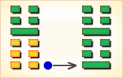

周易第16卦_豫卦(雷地豫)_震上坤下
如有疑问互相交流，微信：470283584
周易第16卦详解
豫卦原文
豫。利建侯行师。
象曰：雷出地奋，豫。先王以作乐崇德，殷荐之上帝，以配祖考。
白话文解释
豫卦：有利于封侯建国，出兵打仗。
《象辞》说：本卦上卦为震，震为雷，下卦为坤，坤为地。春雷轰鸣，大地震动，催发万物，这是豫卦的卦象。先王观此卦象，取法于声满大地的雷鸣，制作音乐，歌功颂德，光荣归于上帝，光荣归于祖考。
《断易天机》解
豫卦震上坤下，为震宫初世卦。雷出地奋，象征春雷使万物苏醒，君王之威行于子民，因此有利于建候、行师。
北宋易学家邵雍解
雷出地上，悦服快乐；安乐之中，预防忧患。
得此卦者，顺天应时，事事吉祥，可得长辈之助，但须防色难，切不可沉迷于声色欢场之中。
台湾国学大儒傅佩荣解
时运：春雷发动，诸事吉祥。
财运：新货上市，必有大利。
家宅：祈神祭祖，可保平安。
身体：祷告静心。
传统解卦
这个卦是异卦（下坤上震）相叠，坤为地，为顺；震为雷，为动。雷依时出，预示大地回春。因顺而动，和乐之源。此卦与谦卦互为综卦，交互作用。
大象：雷出于地上，阳气奋发，万物欣欣向荣。
运势：如意安泰，可得长辈扶助，但须防色难，凡事应有备而战。
事业：十分顺利，事业可以获得成功，但必须符合实际，顺应潮流，且得自己努力奋斗，树立远大目光，尤其不可因事业的顺利而放松谨慎小心的态度，陷于懒散享乐。否则，必将后悔莫及。
经商：时运已到，应大胆行动，即使发生挫折，也可以很快化险为夷。应加强同他人的合作，开诚布公，共同开发事业。
求名：天资聪颖，如能坚守正直的品德，严格要求自己，努力上进，不因有成绩骄傲满足，停止前进，而是兢兢业业，不惰不怠，必定可以有重大成功。
婚恋：十分顺利，一生顺利和吉祥，但万不可掉以轻心，更不可玩弄感情，否则将会出现悲剧。
决策：一生顺利，不会出现大的波折，容易比较顺利得到自己应该得到的。但关键在于自己的努力和奋斗，不得耽于安乐，不可玩物丧志。豁达、大度更有利于健康和长寿。一旦遇到意外的灾害，只要时时严格要求自己，坚守纯正，乐不忘忧，居安思危，必可转危为安。
台湾张铭仁解卦
豫：表示高兴悦乐之意，主小吉象。此卦显示做事积极、有力，性情柔和、圆融，充满令人喜乐之气象。凡事可尽力去做，无大碍。婚姻感情，可得良缘。
解释：顺应天命。
特性：稳重，有组织领导的能力，心地善良乐于助人，做事积极务实有效率。精于计划，有金钱观念。
运势：此卦象征万物欣畅，如意安泰，可得上辈之助。切不可因繁华而怠惰，或沉醉于声色欢场之中。好运不常有，当好好把握。
家运：吉象。切不可迷于情而招破相。
疾病：凶险之卦，注意腹腔、肝胆之疾。
胎孕：安康，会喜得贵子。
子女：儿女均能相亲相爱，前程美好。
周转：稍有阻，过后顺利。
买卖：好时机。秋更吉，有贵人。
等人：途中有碍，一定会来。
寻人：东方或西南方可寻，或他人自来相寻。
失物：难以寻回。
外出：充分准备，从容出发，会十分顺利和平安。
考试：金榜题名。
诉讼：有始而无终，易被多人连累，破财、受惊。
求事：可得上辈提拔，有希望。
改行：吉，大有可为。
开业：开业者大吉大利之象。
周易第16卦初六爻详解
初六爻辞
初六。鸣豫，凶。
象曰：初六鸣豫，志穷凶也。
白话文解释
初六：津津乐道于荒淫享乐，凶险。
《象辞》说：初六爻辞讲，津津乐道于荒淫享乐，其人意志必消退，身名必败裂。
北宋易学家邵雍解
凶：得此爻者，不顺，有口舌之争，前进有阻力。做官的不要得意忘形，须谨慎，以免生祸。读书人则可能会一鸣惊人。
台湾国学大儒傅佩荣解
时运：得意忘形，致遭困境。
财运：初可得利，切忌过贪。
家宅：怪异之惊，应防凶险。
身体：颇为不利。
初六变卦

初六爻动变得周易第51卦：震为雷。这个卦是同卦（下震上震）相叠。震为雷，两震相叠，反响巨大，可消除沉闷之气，亨通畅达。平日应居安思危，怀恐惧心理，不敢有所怠慢，遇到突发事变，也能安然自若，谈笑如常。
周易第16卦六二爻详解
六二爻辞
六二。介于石，不终日，贞吉。
象曰：不终日，贞吉，以中正也。
白话文解释
六二：夹在石缝中，幸而不到一天就被人救出。卜问得吉兆。
《象辞》说：磨难不足一日即解除，卜问得吉兆，因为六二之爻居下卦中位，像人得中正之道。
北宋易学家邵雍解
吉：得此爻者，会获利。做官的宜急流勇退，读书人有成名之机。
台湾国学大儒傅佩荣解
时运：人品高尚，不逐浮华。
财运：自定其志，快速获利。
家宅：严正持家，拒斥小人。
身体：新病可愈，宿疾即忘。
六二变卦
六二爻动变得周易第40卦：雷水解。这个卦是异卦（下坎上震）相叠。震为雷、为动；坎为水、为险。险在内，动在外。严冬天地闭塞，静极而动。万象更新，冬去春来，一切消除，是为解。
周易第16卦六三爻详解
六三爻辞
六三。盱豫，悔。 迟有悔。
象曰：盱豫有悔，位不当也。
白话文解释
六三：懒散游乐，将招致后悔；再加上懈怠大意，那就后悔莫及。
《象辞》说：懒散游乐，将招致后悔，因为六三之爻居于阳位，是处置不当，像人之行事与所处地位不相称。
北宋易学家邵雍解
凶：得此爻者，投机取巧，是非不一。
台湾国学大儒傅佩荣解
时运：本身不正，因而有悔。
财运：稍纵即逝，快速得利。
家宅：速防窃盗。
身体：立即就医。
六三变卦

六三爻动变得周易第62卦：雷山小过。这个卦是异卦（下艮上震）相叠。艮为山，震为雷，过山雷鸣，不可不畏惧。阳为大，阴为小，卦外四阴超过中二阳，故称“小过”，小有越过。
周易第16卦九四爻详解
九四爻辞
九四。由豫，大有得，勿疑，朋盍簪。
象曰：由豫大有得。志大行也。
白话文解释
九四：田猎取乐，大获鸟兽。筮遇此爻，勿疑友人多嘴而谗己。
《象辞》说：田猎取乐，大获鸟兽，说明猎获甚多，如愿以偿。
北宋易学家邵雍解
吉：得此爻者，进取成名，经营获利。做官的会得到知己，进取有望。
台湾国学大儒傅佩荣解
时运：大运正行，不必担心。
财运：众货聚集，大有利市。
家宅：得福有财。
身体：不必担心。
九四变卦

九四爻动变得周易第2卦：坤为地。这个卦是同卦（下坤上坤）相叠，阴性。象征地（与乾卦相反），顺从天，承载万物，伸展无穷无尽。坤卦以雌马为象征，表明地道生育抚养万物，而又依天顺时，性情温顺。它以“先迷后得”证明“坤”顺从“乾”，依随“乾”，才能把握正确方向，遵循正道，获取吉利。
周易第16卦六五爻详解
六五爻辞
六五。贞疾，恒不死。
象曰：六五贞疾，乘刚也。恒不死，中未亡也。
白话文解释
六五：卜问疾病，长时间内不会死去。
《象辞》说：六五爻辞讲患病，因为六五阴爻居于九四阳爻之上，犯了柔乘刚之象。“长时间不会死去”，因为六五之爻居于上卦中位，正当不死之象。
北宋易学家邵雍解
凶：得此爻者，多心事，有灾难，或有腹疾。做官的多洋洋得意，持恩固宠，难免有失。
台湾国学大儒傅佩荣解
时运：性格柔弱，难以振作。
财运：用人不当，致生损失。
家宅：恐被侵占。
身体：带病延年。
六五变卦

六五爻动变得周易第45卦：泽地萃。这个卦是异卦（下坤上兑）相叠。坤为地、为顺；兑为泽、为水。泽泛滥淹没大地，人众多相互斗争，危机必四伏，务必顺天任贤，未雨绸缪，柔顺而又和悦，彼此相得益彰，安居乐业。萃，聚集、团结。
周易第16卦上六爻详解
上六爻辞
上六。冥豫，成有渝，无咎。
象曰：冥豫在上，何可长也。
白话文解释
上六：末日将至尚且享乐，已成之事也将毁败。
《象辞》说：末日将至尚且享乐，以此居上位，怎能长久。
北宋易学家邵雍解
平：得此爻者，因为心气太高，会有诉争之扰，但若能改过自新，心态平和，则不会有过失。做官的会有贪污之嫌，须明哲保身。
台湾国学大儒傅佩荣解
时运：冬去春来，奋发有为。
财运：改旧从新，将可获利。
家宅：迁居改造为宜。
身体：应有转机。
上六变卦
上六爻动变得周易第35卦：火地晋。这个卦是异卦（下坤上离）相叠。离为日，为光明；坤为地。太阳高悬，普照大地，大地卑顺，万物生长，光明磊落，柔进上行，喻事业蒸蒸日上。